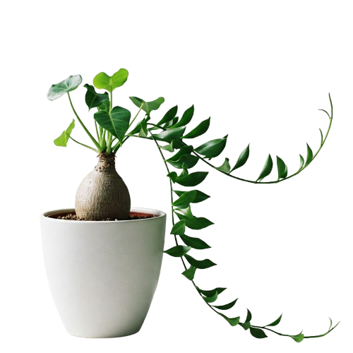
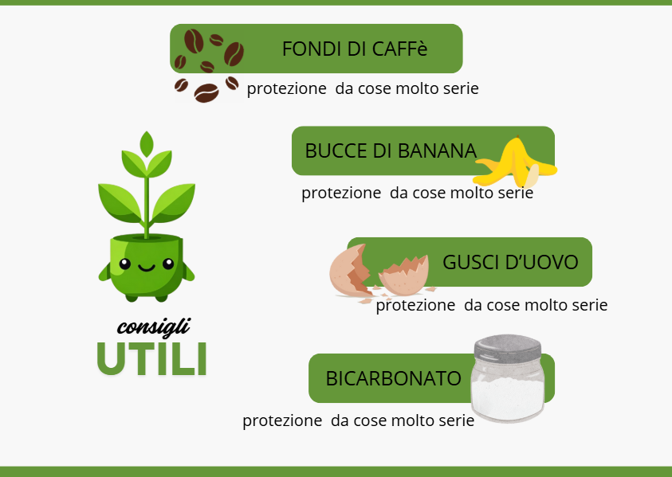

(Beaucarnea recurvata)

Facile
Vaso con buon drenaggio, Forbici da potatura
Minima (pulizia foglie, rinvaso occasionale)
Poca
Moderata in primavera/estate, scarsa in autunno/inverno. Lasciare asciugare bene il terreno tra un'annaffiatura e l'altra.
Luminosa, anche pieno sole diretto. Evitare l'ombra totale.
Ben drenante, specifico per piante grasse o un mix di terriccio universale, sabbia grossolana e perlite/pomice.
Rimuovere solo le foglie secche o danneggiate alla base. Non necessaria per la forma.
Concime liquido per piante verdi diluito, una volta al mese in primavera/estate. Sospendere in autunno/inverno.

La **Beaucarnea recurvata**, comunemente nota come "Piede di Elefante" o "Mangiafumo", è una pianta d'appartamento molto popolare, apprezzata per il suo tronco rigonfio alla base che ricorda appunto la zampa di un elefante e per la sua estrema resistenza. Questa caratteristica base serve alla pianta per immagazzinare acqua, rendendola molto tollerante alla siccità. Le sue foglie lunghe, sottili e ricadenti formano un ciuffo elegante sulla cima del tronco.
Originaria delle regioni semi-desertiche del Messico, la Beaucarnea è una scelta eccellente per chi cerca una pianta a bassa manutenzione e dal forte impatto estetico. È ideale anche per gli ambienti interni con aria secca, poiché non richiede elevata umidità ambientale. La sua crescita è lenta, ma con il tempo può raggiungere dimensioni considerevoli, diventando un vero e proprio albero da interno.
Nonostante la sua robustezza, è importante garantire un buon drenaggio per evitare il ristagno d'acqua, che è il suo peggior nemico e può portare al marciume radicale del tronco.